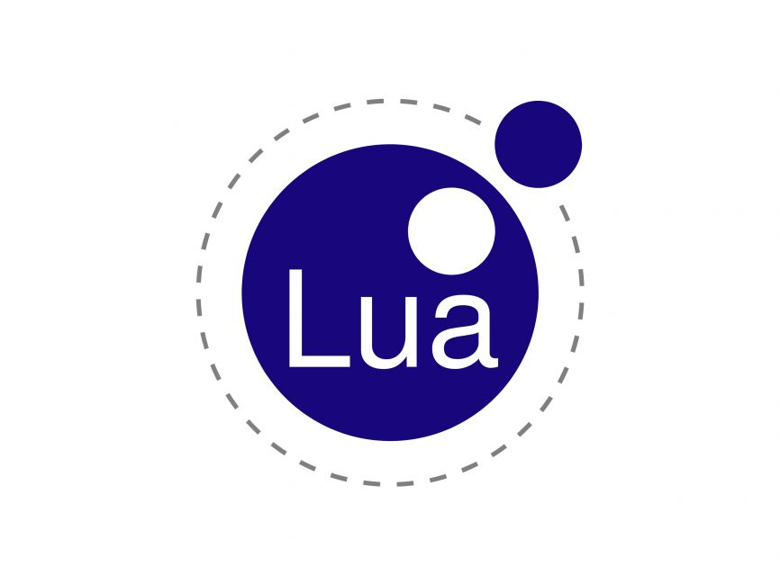
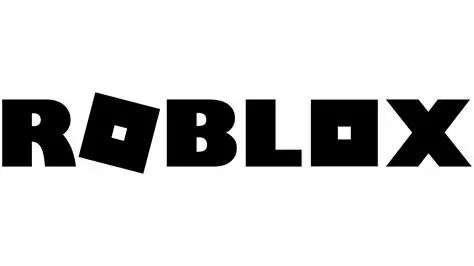
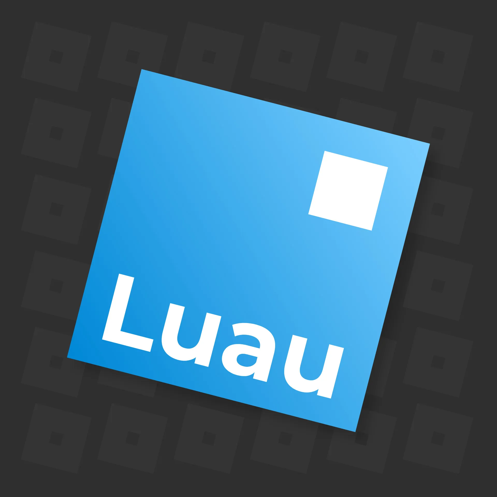
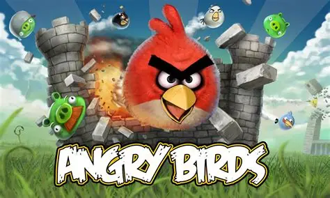
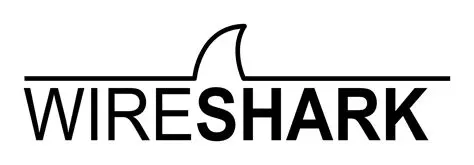

BTS SIO
VEILLE TECHNOLOGIQUE
Sommaire
Plan de la présentation
- Présentation du langage Lua
- Pourquoi Lua ?
- Domaines d'utilisation
- Analyse technique et évolution
- Méthodologie de veille
- Mise en pratique
- Conclusion

Logo de Lua
Lua signifie Lune en portugais.
Présentation du langage
Lua en quelques points clés
Lua est un langage crée en 1993 au Brésil par des chercheurs. C’est un langage léger, interprété et portable, conçu pour être intégré dans d’autres programmes plutôt que pour construire seul une application complète.
On le retrouve donc souvent comme langage de script. Sa syntaxe est simple, ce qui le rend assez rapide à apprendre, mais il reste suffisamment puissant pour gérer un gameplay.
Sa particularité principale repose sur les tables, une structure très souple qui permet d’adopter plusieurs styles de programmation, notamment une approche proche de l’orienté objet. C’est cette flexibilité qui fait de Lua un langage à la fois accessible et efficace.
Simple.
Léger.
Facile à apprendre.
Moins populaire que Python, Java, etc...
Qui dit moins populaire dit aussi moins de ressources et outils disponible.
Introduction
Pourquoi avoir choisi Lua ?
En parallèle de mes projets personnels, j’ai cherché à développer des jeux sur la plateforme Roblox. Comme cette plateforme utilise le langage Lua à travers Luau (Plus performant, multijoueur, plus rapide), cela m’a naturellement amenée à m’y intéresser, ce qui explique le choix de ma veille technologique.
Cette veille ne se limite donc pas à une recherche théorique. Pour compléter cette démarche, j’ai développé un mini-jeu inspiré de Flappy Bird avec le framework LÖVE, aussi appelé Love2D, en créant moi-même les assets (20 heures pour créer des skins, des tuyaux, des interfaces. Les décors ont été trouvé sur Pinterest). Cette mise en pratique m’a permis de mieux comprendre la logique de Lua et ses usages dans le développement de jeux.


Usages et analyse
Où retrouve-t-on Lua aujourd’hui ?
Lua est principalement utilisé dans le jeu vidéo. C’est particulièrement visible avec Roblox Studio (Création de jeux), qui repose sur ce langage pour permettre aux utilisateurs de créer leurs propres jeux et expériences interactives. Quel que soit leur âge, les créateurs peuvent imaginer et développer les jeux qu’ils ont envie de produire.
On retrouve aussi Lua dans des jeux comme World of Warcraft, Angry Birds ou Garry’s Mod, où il sert à gérer des scripts, des comportements ou certains éléments de l’interface. Cela montre qu’il est bien adapté aux systèmes qui demandent de la souplesse et des modifications rapides.
En dehors du jeu vidéo, Lua est également présent dans des outils comme Wireshark ou Lightroom, ainsi que dans les systèmes embarqués. Sa légèreté en fait un bon choix dès qu’il faut intégrer un langage de script sans alourdir l’ensemble.
Jeux vidéo, scripts d’interface, outils d’analyse réseau, plugins et systèmes embarqués.
Lua est pertinent lorsque la flexibilité, la rapidité d’intégration et la légèreté sont recherchées.




Analyse technique et évolution
Forces, limites et tendances
Lua est apprécié pour sa légèreté et ses performances. Sa syntaxe reste simple, ce qui facilite l’apprentissage et permet d’aller vite dans la mise en place d’un projet.
Il peut aussi être combiné avec des langages comme le C ou le C++, ce qui est très utile dans des projets plus complexes, notamment lorsqu’il faut concilier performance et souplesse de scripting.
En revanche, Lua est moins populaire que des langages comme Python ou JavaScript. Cela signifie qu’il existe moins de ressources, moins d’outils et une communauté plus réduite, ce qui peut devenir une limite sur des projets de grande ampleur.
Lua a malgré tout évolué avec plusieurs versions, en particulier les versions 5.x. Il connaît aujourd’hui un regain d’intérêt grâce à Roblox, qui le rend plus visible et plus accessible à un large public.
Actuellement, Lua connaît un regain d’intérêt grâce à des plateformes comme Roblox, qui démocratisent son utilisation.
Selon lua.org, Lua 5.5.0 est sortie le 22 décembre 2025 et Lua 5.4.8 le 4 juin 2025.
Méthodologie de veille
Comment ai-je réalisé cette veille ?
Pour réaliser cette veille, j’ai utilisé plusieurs types de sources : la documentation officielle de Lua, des forums, GitHub, Stack Overflow, ainsi que des tutoriels vidéo. Cela m’a permis de croiser des informations théoriques, des exemples concrets et des retours de développeurs.
J’ai aussi utilisé Google Alerts pour suivre l’actualité autour de Lua. Cette méthode m’a aidé à observer à la fois l’évolution du langage, ses usages actuels et les contextes dans lesquels il reste pertinent aujourd’hui.

Conclusion
De la théorie à l'expérimentation
Pour compléter cette veille, j’ai développé un jeu type Flappy Bird avec le framework LÖVE, aussi appelé Love2D. Ce framework fournit déjà les bases nécessaires à la création d’un jeu, comme la gestion de la fenêtre, des graphismes, du son, des entrées clavier et d’une partie de la logique technique.
Son fonctionnement repose notamment sur des fonctions clés comme love.load, love.update et love.draw, qui servent respectivement à initialiser le jeu, mettre à jour la logique en continu et afficher les éléments à l’écran. Cela permet de se concentrer directement sur la logique du jeu sans devoir gérer toute la partie bas niveau.
Dans ce projet, j’ai mis en place la gravité, les collisions, le score et les animations. J’ai également créé moi-même les assets graphiques avec Ibis Paint X, en m’appuyant sur des références de spritesheets trouvées sur Spriters Resource. Cela m’a permis de travailler à la fois la partie technique et la partie créative.
Ce mini-jeu m’a réellement permis de passer de la théorie à la pratique. Il m’a aidée à mieux comprendre comment Lua peut être utilisé dans un vrai projet de jeu, avec une logique continue, des interactions et une boucle de rendu.
Au final, cette veille m’a montré que Lua est un langage simple mais puissant, particulièrement adapté au jeu vidéo et aux systèmes embarqués. Sa principale limite reste son manque de popularité face à d’autres langages plus outillés.
Développer ce mini-jeu avec LÖVE m’a permis de relier ma veille, mon intérêt pour Roblox et une vraie mise en pratique du langage Lua.
Sources
Références utilisées
- Historique officiel de Lua
- Manuels de référence officiels de Lua
- Versions et historique des releases de Lua
- Site officiel de LuaJIT
- Documentation officielle Luau / Roblox Creator Hub
- Documentation Roblox sur le scripting
- Guide officiel Getting Started de LÖVE
- Wireshark Wiki : Lua
- Adobe Lightroom Classic SDK
Google Alerts, GitHub, Stack Overflow, documentation officielle et tutoriels en ligne.